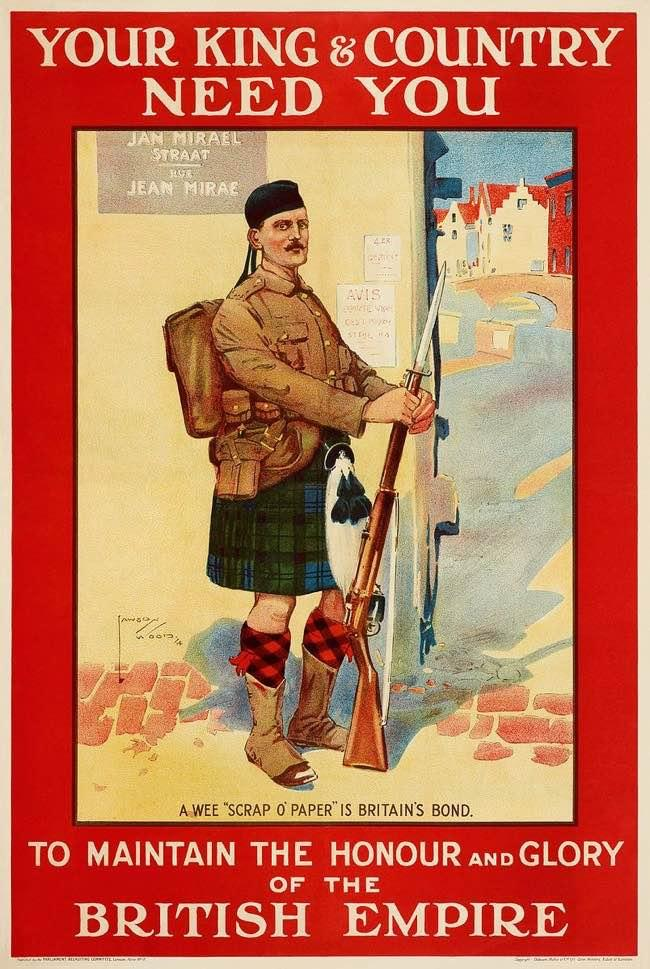
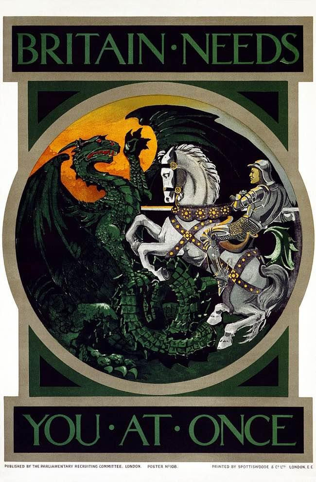
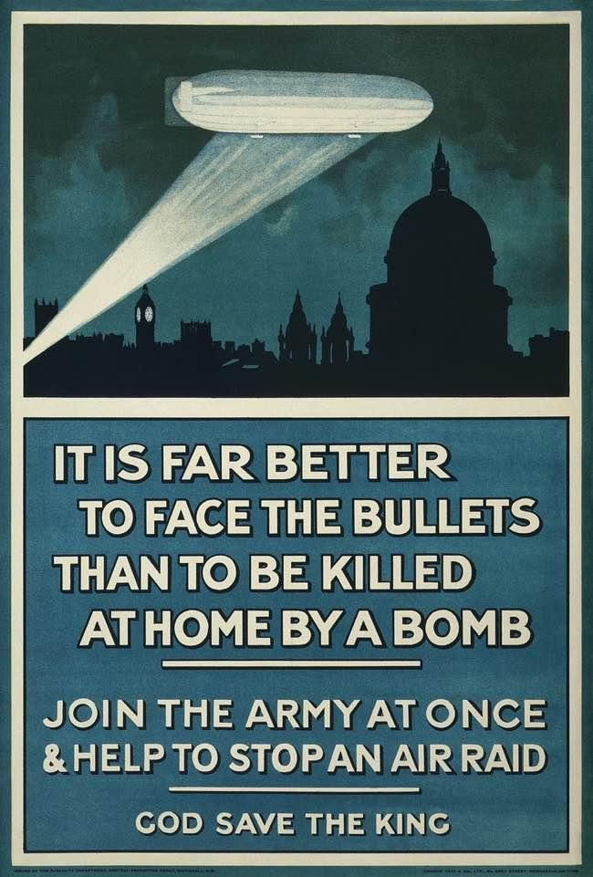
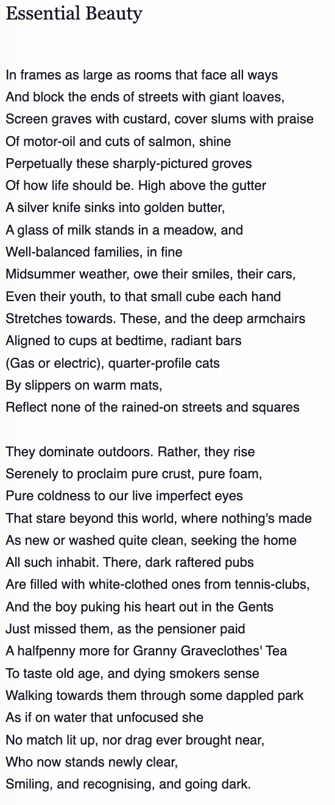
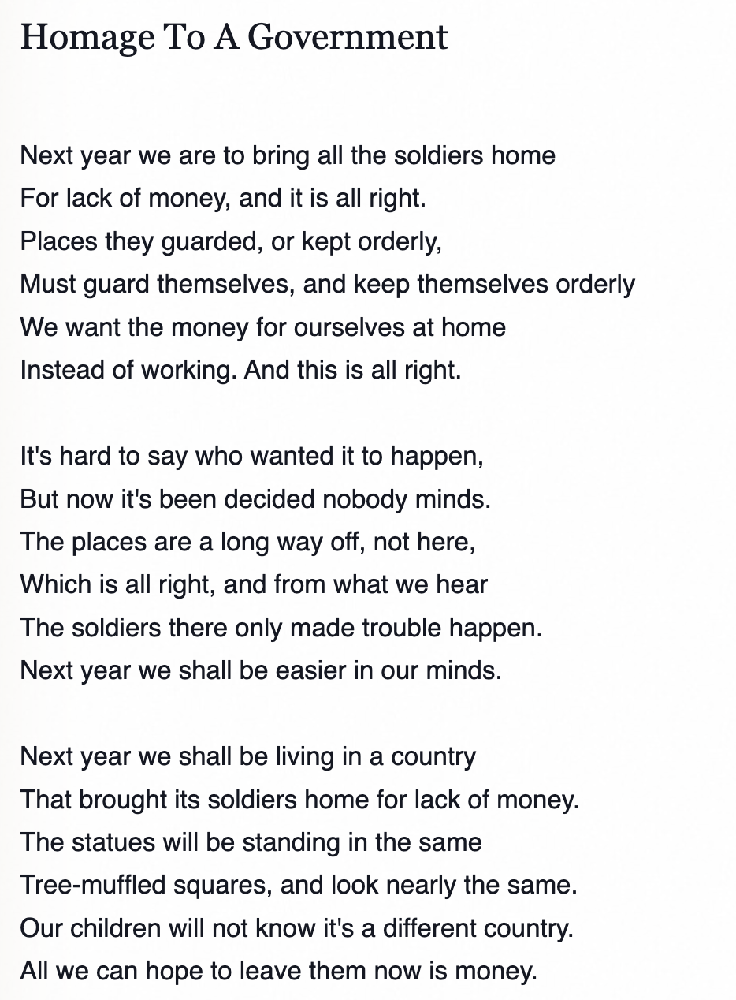
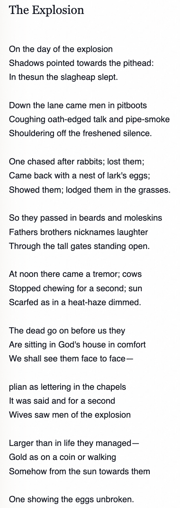

Anthony Mauclair — IB English Language and Literature SL
Paper 1 35% · Paper 2 35% · Individual Oral 30%
Individual Oral
Global issue: public narratives legitimise violence as moral duty. Field of inquiry: politics, power and justice.
Body of work: three recruitment posters by the Parliamentary Recruiting Committee (1914-1916). The PRC produced around 200 designs. No conscription until January 1916, so every man addressed could legally say no. The whole campaign ran on persuasion, mostly shame.
Literary texts: three Larkin poems, from The Whitsun Weddings and High Windows. The posters work before the harm, they make violence look like duty so it happens. Larkin works after, on the words that make what already happened bearable.
Posters
1. Your King and Country Need You

Direct address. "Your" makes the war a private relationship, so not enlisting stops being a decision and starts being disloyalty.
Soldier dead centre, life-size, gaze meets the viewer. One man being addressed, not a crowd.
Clean uniform, calm face. No blood, no mud, no enemy anywhere. The absence is the argument, it persuades by removing the war.
"Honour and glory" - abstract nouns replace physical suffering. Defence of national character, not killing.
"A wee scrap o' paper is Britain's bond" - a treaty becomes a test of personal integrity.
2. Britain Needs You at Once

St George and the dragon. Modern industrial war rewritten as medieval heroism.
The enemy is a monster, not a person, so fighting stops feeling like harming people.
White horse against dark dragon, Britain as innocence in a binary.
"At once" removes deliberation. You are not asked to consider the war, only to arrive at it.
First poster removes the war, this one removes the enemy. St George also brings religious authority in, which comes back in the third poster.
3. It Is Far Better to Face the Bullets Than to Be Killed at Home by a Bomb

1915, voluntary enlistment falling. Honour dropped for fear.
Dark palette, Zeppelin over London. The home front becomes a target (raids had started that year).
False dilemma: face bullets abroad or wait to be killed at home. Staying is never allowed to look safe.
A man who stays looks like he is hiding behind his family, not protecting it.
The move from poster 1 to this one shows the campaign losing confidence in its own moral case. Honour worked in 1914, by 1915 it needed fear underneath.
Larkin
1. Essential Beauty

Adverts, not war, but the same mechanism.
"Block the ends of streets" - the hoardings obstruct what is behind them, they do not decorate.
"Screen graves with custard, cover slums with praise" - hiding, not fixing. Nothing improves, it just stops being visible.
"How life should be" - the world being sold never existed.
Ends with the dying smoker seeing the woman from the cigarette advert. The image that harmed him is his last comfort. Same direction as the posters: honour laid over the war the way custard is laid over graves.
2. Homage to a Government

1968 withdrawal from east of Suez.
"And it is all right" repeated. It sounds reasonable, the reasonableness is what unsettles.
Same rhyme words in every stanza, the language circles without developing. That is how official justification behaves.
"For lack of money" strips patriotism out. Duty becomes accounting.
Contradicts the posters: governments build narratives of duty when they need them and drop them when they don't.
3. The Explosion

"Fathers, brothers, nicknames, laughter" - the miners get individuality before public memory turns them into symbols.
After the disaster: "larger than in life", "gold as on a coin". Steady hymn-like rhythm.
Last line stands alone, one of the dead showing the eggs unbroken. A gesture aimed at the living.
Complicates the global issue. This is idealisation after death, it comforts rather than recruits, and Larkin does not mock it.
Some narratives grow out of grief. They turn dangerous when suffering is made so noble that criticising it feels cruel, which is also how the posters protect themselves.
Picking a global issue
Significant on a wide scale.
Transnational, not tied to one small setting.
Impact felt across different contexts.
Has to genuinely be in both texts, not forced.
Method: list the texts studied, pin the fields of inquiry, then look for connections between them.
Rules for the IO
Surname only.
Balance literary and linguistic terminology.
Quote once, then analyse it. Don't re-quote.
PEE / PEEL every time.
Annotate first.
Plan. Always plan.
Don't labour a point.
Minimum 9 punctuation marks in written work.
Pre-plan the final line.
Introduction has to state the text type.
Refer to reader / audience.
No slang.
No clichés.
Key words.
Syntax.
A body of work is a group of images, never one. Refer to the global issue more than once but don't force it into every sentence. Same with authorial intent. No statistics, it isn't a political speech - quote from the text.
Do a damn plan.
Paper 1
Guided analysis of a non-literary text. Not describing everything, explaining how selected choices build the message. Start: "The given text is..."
Introduction
Text type
Content
Writer
Context
Tone
Purpose
Audience
Message
Body paragraphs
Point
Example
Explanation
Link
Posters
Start with the most prominent part of the image to the viewer's eye.
Colours used, and how they suit the image.
What message it conveys.
The focus of the image, and the gaze of the person.
Side details give ambience, they aren't the focus.
Contrast: text against background, person against text, person against background.
What it symbolises.
Detail in the text - colour, font, how it creates effect and relates to the message. Punctuation creates a pause in the reader's mind, e.g. a taste of the silent stillness of a hike.
Everything included in a poster is there for a reason.
Photographs
Colourful fruits like cherries pack good flavour:
C - Composition
F - Focus / focal point
L - Light
C - Colour
P - People and places
G - Gaze
F - Framing and cropping
Also: colour contrast, juxtaposition, foreground and background, rule of thirds (imaginary noughts and crosses grid, look at the four intersections).
Look closely, look long.
Ask probing questions.
Put it together and interpret.
Then: what emotions are evoked, what the political / social / cultural context is, what we can imply about the audience, what the main message is. A body of work is three or more - find the commonality, the patterns, and how they link.
Cartoons
Main issue and its context.
Main message about that issue.
Central people - what they are doing or saying, how they are represented.
Start with what is explicitly shown, then what it implies, then the wider context.
Don't guess age, motives, jealousy or private thoughts.
If there is an expletive or a slur in the text, analyse the register shift and its effect. Don't just repeat it or note that it's rude.
Say the word class - noun, verb, adverb - not just "word".
Paper 2
Comparative essay. Falls apart the moment I start retelling the texts.
First paragraph strongest, second weakest, third ends powerfully.
Annotate as much as possible in the planning stage, then label each annotation 1, 2 or 3 for the body paragraph it belongs to.
Move beyond literal meaning. Frame the idea as a critique, commentary or exploration. Arguable, not descriptive.
Prioritise authorial intent - not only why the author did this, but what they wanted the reader to feel.
Track patterns, not isolated techniques. Repeated imagery reinforces a central idea, juxtaposition highlights conflict, tonal shifts signal deeper meaning.
Analyse in layers: surface (imagery of confinement), deeper (psychological restriction), broader (critique of societal control).
Zoom in and zoom out. "Caged" connotes restriction, expand that to a critique of societal confinement.
Integrate terminology, don't list it. Be conceptual, not descriptive - "constructs an atmosphere of emotional desolation", not "this shows sadness".
Texts have to be balanced or I lose structure marks.
Phrases: positions the reader to perceive, provokes discomfort, challenges the reader's assumptions, reinforces the central critique of, further develops the overarching idea that, constructs sympathy.
Oral
Theme, tone and mood - keep them distinct.
Talk about the verses, not just the general idea.
Chorus - use it to track repetition or a tonal shift.
Outro - what stays with the listener.
Follow PEE. Use literary and linguistic terminology. Don't state the obvious ("Girl with a Balloon is about a girl with a balloon"). Don't avoid controversial issues if they're actually in the text.
Delivery: no fillers, no "cool" or "yeah" - say nothing instead. Don't invent vocabulary. Build up, don't rush. Sound defeated and then re-energise. Pre-planned dynamic final sentence, not something tagged on at the end. The examiner should know I've finished.
When the teacher says 30 seconds left, don't start a new text. The ending should not be rushed.
Academic honesty: no copied ideas from AI, parents or tutors. They can spot phrasing that's too mature for a teenager, and it puts the whole diploma at risk.
Feedback to myself after the last one: write my name properly on the IO bullet points, slow down, use higher-end vocabulary and more techniques next time, focus more.
Class notes
Course framework
Areas of exploration: readers, writers and texts; time and space; intertextuality.
Fields of inquiry: culture, identity and community; beliefs, values and education; politics, power and justice; art, creativity and imagination; science, technology and the environment.
First World War propaganda posters
War declared 1914. The British government ran a huge campaign to get men aged 19 to 30 to volunteer. No social media, no television, so posters were one of the most powerful methods available.
Propaganda is biased or misleading information used to influence people's ideas and actions. Persuading and manipulating.
Most of these men had never been further than Scotland or Wales and had never heard French.
Techniques: peer pressure (everyone else is getting involved), endorsement (a quote from a high-profile figure), emotional blackmail (feel guilty for not enlisting), emotive language ("duty", "glorious" - calling a man glorious is calling him god-like), imagery of being part of the team and seeing yourself in uniform, capital letters for the most important parts, exclamation marks, rhetorical questions where the answer is already implied, bold writing so the message can't be missed.
Compared two versions of the same poster: one figure in a helmet, one in a cap; different first line; "union" changed to "onion"; wives present in one and not the other; last line changed from "will you follow" to "will you stop". Small changes retarget the whole message.
Larkin
Mr Bleaney. "Bleaney" is not a real surname - a neologism, Bleaney plus meany. To coin a word is the verb, a neologism is the noun.
The persona in a poem isn't always the writer. A woman poet can use a male persona.
Stanza is the Greek word; "verses" is what you call them when you're little.
There is an injection of dialogue - we hear the landlady's voice as well as the speaker's.
Ambiguity: "bodies" is the firm he works for, but it also reads as mortuary. More than one meaning at once.
He could have taken the curtains down and didn't - lack of imagination.
Listing. No room for books, so no reading.
"I know his habits" - the landlady is still annoyed at him.
"Plug" is onomatopoeic. The frigid / flirting contrast is sexual and provocative; the only action he gets is what he sees out of the window.
Caesura - a line cut into by a comma or semicolon.
Larkin died in 1985. Letters and tapes published after his death showed racist views and made English teachers uneasy about teaching him. The question is whether the work can be separated from the man. The poems were written when he was younger; he got bitter later.
There is a Philip Larkin Society. They hold a garden party at his house once a year.
Robert Capa
Born André Friedmann, a refugee, in Paris at 22 with a camera and not much else. Displaced his whole life.
Instead of carrying a gun he carried a camera - his way of fighting fascism.
"Bob Capa" was an invented identity, a persona built to sell photographs.
Black and white. Bold graphic images of what was happening right then.
The Falling Soldier is controversial because of what it shows and whether it was staged. He receives death on his feet - fallen, but still on his feet. He loses his life and keeps his dignity.
He wanted to experience it before photographing it.
The war photographer's most fervent wish is for unemployment.
Photos create stories and emotions. We want an emotional response - say this in the IO.
Shakespeare and Romeo and Juliet
What we know comes from church and legal records - baptism, marriage licence, property.
Born Stratford 1564, third of eight children, died 1616 on his birthday, buried in Holy Trinity Church.
Actor, then a charter member of the Lord Chamberlain's Men (later the King's Men) by 1594. Thirty-seven plays by 1612.
Romeo and Juliet is an early play, written somewhere between 1594 and 1596. Don't give an exact date, nobody actually knows.
Burbage built the first permanent theatre in England; before that companies played in inn courtyards. Shakespeare built the Globe and calls it the "wooden O" in Henry V. Groundlings stood around the stage for a penny.
Acting wasn't respectable to the Puritans. All women's parts were played by boys, so Juliet would have been played by a boy.
Iambic pentameter, ten beats, in rhythm with a heartbeat: I will, go to, the gym, and hit, my legs.
Talk about it as a play - actors, staging, audience. Specific to drama.
Casting: Juliet has to look 12-14, still a girl and not womanly. Romeo 14-15 and attractive. The Nurse is motherly, she breastfed Juliet and is almost a second mother. Paris is handsome but there's something we don't like about him.
Conflict: male banter, innuendo ("my naked weapon is out"), rivalry, a fight that escalates into a riot. Romeo isn't in the opening fight.
Fractious - hot, bothered, irritated. Benevolent - kind and caring. Belligerent - aggressive. Onomastics - when a character's name reflects the mood of the story. The worst insult available then was "villain".
Act 4: Juliet would rather do anything than marry Paris. The friar's plan makes her look dead; she'll be buried in the Capulet vault and wake as if from a coma. Her death speech doesn't kill her - she's thinking about the smell and the decomposing bodies. Witches and ghosts were a real fear then.
Act 4 scene 5: everyone reacts strongly to the apparently dead Juliet. Rule of three and repetition, "O day, O day, O day". There's black humour at the end of the scene and nobody wants it.
Act 5: Romeo says nothing is wrong with the world as long as Juliet is fine - heavily ironic. "I defy you, stars." Balthasar tells him to be patient. He's almost bipolar in the speed of the swings.
The apothecary is poor and could face the death penalty. Romeo offers gold, and says that gold is the real poison. Greed and money.
Juliet's choice at the end is to die and be with Romeo or live celibate. A modern audience is more likely to say what a waste. She takes his dagger.
The whole story gets retold at the end. The prologue already told us about the "death-marked love" - the ending is handed to us and then we have to watch it.
Conflict is a usable global issue here.
Glossary
Command terms
Analyse - break down in order to bring out the essential elements or structure.
Comment - give a judgement based on a given statement or result.
Compare - give an account of the similarities between two or more items, referring to all of them throughout.
Compare and contrast - give an account of similarities and differences, referring to all of them throughout.
Contrast - give an account of the differences between two or more items.
Discuss - offer a considered, balanced review including a range of arguments, with conclusions supported by evidence.
Evaluate - make an appraisal by weighing up strengths and limitations.
Examine - consider an argument or concept in a way that uncovers its assumptions and interrelationships.
Explain - give a detailed account including reasons or causes.
Explore - undertake a systematic process of discovery.
Identify - provide an answer from a number of possibilities.
Interpret - use knowledge and understanding to recognise trends and draw conclusions.
Justify - give valid reasons or evidence to support an answer or conclusion.
Outline - give a brief account or summary.
State - give a specific name or brief answer without explanation.
Suggest - propose a solution, hypothesis or possible answer.
To what extent - consider the merits or otherwise of an argument, supported by evidence and sound argument.
Course terms
Areas of exploration - readers, writers and texts; time and space; intertextuality.